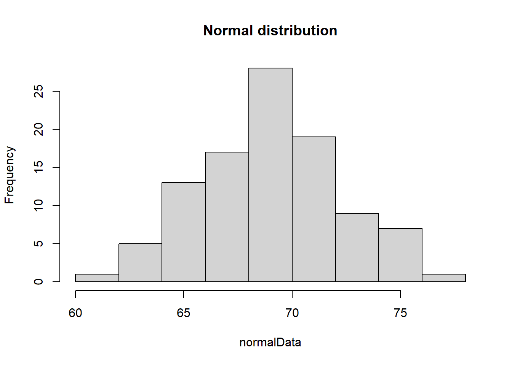
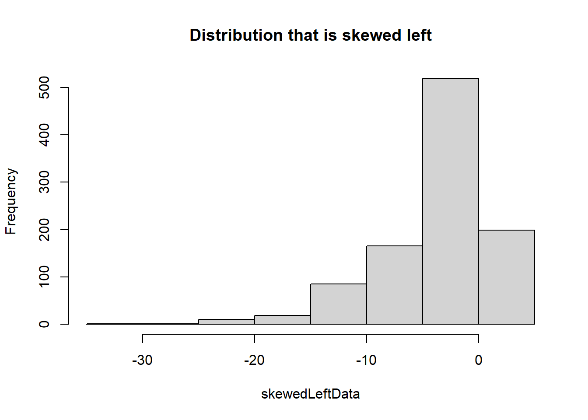
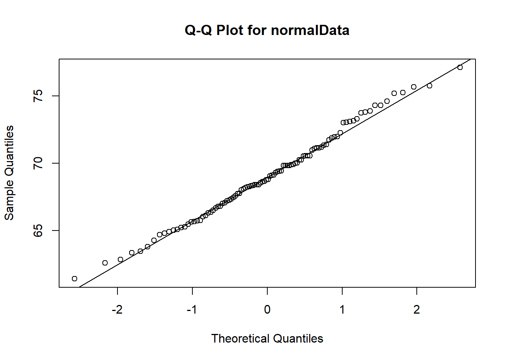

2.1 Frequency distributions for organizing and summarizing data
A frequency distribution is a summary table or graph that shows the count or frequency of each unique value or category in a dataset, providing a clear picture of how data is distributed across different values or groups.
2.1.1 Frequency distributions
The R command table() will generate a frequency distribution for any data set. Let’s analyze example test scores from a fictional math class. Notice the first row of the output is the data name, the second row is the actual data, and the third row contains the number of times each data value appears.
Code
# Load test data into a variable names scoresscores =c(95, 90, 85, 85, 87, 74, 75, 64, 85, 84, 87, 15, 20, 75, 75, 90, 75)# Create a frequency table for the scores datatable(scores)
Relative frequency distributions give similar information as a frequency distribution except they use percentages. Let’s examine the same scores data set defined above. This code will give relative frequency rounded to the nearest whole number. Notice in the output that the second row is the actual data and the third row contains the relative frequencies (rounded to two decimal places).
Code
# Create a relative frequency table for the scores datarftable <-table(scores)/length(scores)round(rftable, digits =2)
A histogram is a bar chart that shows how often different values occur in a dataset.
2.2.1 Histogram
The command hist() will generate a histogram for any data. Here is an example using our scores data from above. Notice the x-axis represents the actual scores and the y-axis shows the frequency of the data points. We will use the following command options: 1) main allows the title to be specified, 2) xlab sets the x-axis label, and 3) ylab sets the y-axis label.
Code
# Create a histogram and customize the axis labels and title# main is the Plot title, xlab is the x-axis label, & ylab is the y-axis labelhist(scores, main ="Histogram for test scores", xlab ="Test Scores", ylab ="Frequency")
2.2.2 Relative frequency histogram
A relative histogram is a bar chart that displays the proportion or percentage of values in different bins within a dataset, providing a relative view of the data distribution.
Code
# Using freq = FALSE in hist() will create a relative frequency histogramhist(scores, freq =FALSE, main ="Relative frequency histogram", xlab ="Test Scores", ylab ="Relative Frequency")
2.2.3 Common distributions
Normal distributions are bell-shaped and symmetrical, uniform distributions have constant probabilities across a range, skewed right distributions are characterized by a long tail on the right side, and skewed left distributions have a long tail on the left side, each exhibiting distinct patterns of data distribution. We will use the hist() command to explore each of these common distributions in the code below.
Code
# Sample normal distributionnormalData <-rnorm(100)# Sample uniform distribution using the command runifuniformData <-runif(50000, min =10, max =11)# Sample of a distribution that is skewed rightskewedRightData <-rexp(1000, 0.4)# Sample of a distribution that is skewed leftskewedLeftData <-1-rexp(1000, 0.2)# Create histogram of normal datahist(normalData, main ="Normal distribution")

Code
# Create histogram of uniform datahist(uniformData, main ="Uniform distribution")
Code
# Create histogram of skewed right datahist(skewedRightData, main ="Distribution that is skewed right")
Code
# Create histogram of skewed left datahist(skewedLeftData, main ="Distribution that is skewed left")

2.2.4 Normal quantile plots
A normal quantile plot, also known as a Q-Q plot, is a graphical tool used to assess whether a dataset follows a normal distribution by comparing its quantiles (ordered values) to the quantiles of a theoretical normal distribution; if the points closely follow a straight line, the data is approximately normal. Let’s use the commands qqnorm() and qqline() to visually test which data set is most likely a sample from a normal distribution.
Code
# Test normalData from aboveqqnorm(normalData, main ="Q-Q Plot for normalData")qqline(normalData)

Notice that the normalData Q-Q plot shows the points close to the Q-Q line over the entire x-axis.
Code
# Test uniformData from aboveqqnorm(uniformData, main ="Q-Q Plot for uniformData")qqline(uniformData)
For the uniformData dataset, the Q-Q plot shows good agreement between points and line in the center (around 0) but not on either left or right of the x-axis.
2.2.5 Let’s put it all together!
In the built-in R dataset ChickWeight, weights are taken from several groups of chickens that were fed various diets. We are asked to use both histogram and Q-Q plots to determine if weights from group 1 and 4 are approximately normal, uniform, skewed left, or skewed right.
Code
# Load data from the built-in dataset into a variable named ChickWeightdata("ChickWeight")# Extract all weights from group 1group1Weights <- ChickWeight[ChickWeight$Diet ==1, 1]# Extract all weights from group 4group4Weights <- ChickWeight[ChickWeight$Diet ==4, 1]# Create a histogram of weights from group 1hist(group1Weights, main ="Group 1 weights", xlab ="Weight", ylab ="Frequency")
Code
# Create a histogram of weights from group 4hist(group4Weights, main ="Group 4 weights", xlab ="Weight", ylab ="Frequency")
Is the group 1 distribution approximately normal or would a different distribution be a better fit? What about group 4? Now, let’s confirm our results using Q-Q plots.
Code
# Test group1Weights from aboveqqnorm(group1Weights, main ="Q-Q Plot for Group 1")qqline(group1Weights)
Code
# Test group4Weights from aboveqqnorm(group4Weights, main ="Q-Q Plot for Group 4")qqline(group4Weights)
Does the Q-Q plot confirm your guess from our visual inspection? Which group is closer to a normal distribution?
2.3 Graphs that enlighten and graphs that deceive
R has many commands to illustrate data revealing hidden patterns that could be otherwise missed. We will explore several of these commands using three different datasets:
Chicken Weights: Same data used in Section 2.2: two different groups of chickens fed with different feed.
Airline Passengers: A time series of the number of airline passengers in the US by month.
US Personal Expenditure Average personal expenditures for adults in the US from 1960.
This block of code will load this data.
Code
# Chicken weights:# Load data from the built-in dataset into a variable named ChickWeightdata("ChickWeight")# Extract all weights from group 1group1Weights <- ChickWeight[ChickWeight$Diet ==1, 1]# Extract all weights from group 4group4Weights <- ChickWeight[ChickWeight$Diet ==4, 1]# Airline passengers:# Load from the built-in dataset. This will create a variable named AirPassengers containing the time series.data("AirPassengers")# Personal expenditure:# Load from the built-in dataset. This will create a variable named USPersonalExpenditure containing the data.data("USPersonalExpenditure")# We now extract only information from 1940expenditures1940 <- USPersonalExpenditure[1:5]# We now extract only information from 1960expenditures1960 <- USPersonalExpenditure[21:25]# Define categories for expenditure datacats <-c("Food and Tobacco", "Household Operation", "Medical and Health", "Personal Care", "Private Education")# Define category names from cats abovenames(expenditures1940) <- catsnames(expenditures1960) <- cats
2.3.1 Dotplot
A dotplot is a simple graphical representation of data in which each data point is shown as a dot above its corresponding value on a number line, helping to visualize the distribution and identify patterns in a dataset. With our data previously loaded from the previous run, let’s create a dotplot of the data. First for weights of both groups of chickens.
Code
# Dotplot for group 1 chickensdotchart(group1Weights, main ="Dotplot of Group 1 chicken weights", xlab ="Weight")
Code
# Dotplot for group 4 chickensdotchart(group4Weights, main ="Dotplot of Group 4 chicken weights", xlab ="Weight")
2.3.2 Stem plot
A stem plot, also known as a stem-and-leaf plot (or just stemplot), is a graphical representation of data where each data point is split into a “stem” (the leading digit or digits) and “leaves” (the trailing digits) to display the individual values in a dataset while preserving their relative order, making it easier to see the distribution and identify key data points. Let’s create a stemplot for our chicken weight data from above.
Code
# Stemplot of group 1 weightsstem(group1Weights)
The decimal point is 1 digit(s) to the right of the |
2 | 599
4 | 011111111112222223334578889999999901111112344556667788999
6 | 001122233445557777888801111122234446799
8 | 112344445788999901233366678889
10 | 0011233666780222355679
12 | 00234455683456889
14 | 112468945777
16 | 0002234481457
18 | 124577257899
20 | 255958
22 | 037
24 | 809
26 | 6
28 | 8
30 | 5
Code
# Stemplot of group 4 weightsstem(group4Weights)
The decimal point is 1 digit(s) to the right of the |
2 | 9
4 | 0011122229001123345
6 | 122345667989
8 | 024455668
10 | 0133345878
12 | 02345678158
14 | 14567823455677
16 | 068034455
18 | 44458677899
20 | 03445500
22 | 2134478
24 |
26 | 1449
28 | 1
30 | 3
32 | 2
2.3.3 Scatter Plot
A scatter plot is a graphical representation that displays individual data points on a two-dimensional plane, with one variable on the x-axis and another on the y-axis, allowing you to visualize the relationship, pattern, or correlation between the two variables. Let’s create a scatter plot using the R command plot() for the US airline passengers by month using our data from above.
Code
# Time series plot of AirPassengersplot(AirPassengers, main ="US airline passengers by month", xlab ="Time", ylab ="Total Passengers", type ="p")
Notice the overall increasing trend of the data.
2.3.4 Time-series Graph
A time series is a sequence of data points collected or recorded at successive points in time, typically at evenly spaced intervals, and a time series graph visually represents this data over time, allowing us to observe trends, patterns, and changes in the data’s behavior. Let’s use the R command ts_plot() to plot the total US airline passengers by month using our data from above.
Code
# Time series plot of AirPassengersts.plot(AirPassengers, main ="US airline passengers by month", xlab ="Time", ylab ="Total Passengers")
The time series graph shows several interesting phenomena: 1) airline travel is seasonal with the same basic pattern repeated each year and 2) the overall trend is increasing.
2.3.5 Pie Chart
A pie chart is a circular graph that visually represents data as slices, with each slice showing the proportion or percentage of different categories in the whole dataset. Let’s use a pie chart to visualize the difference between average personal expenditure in the US in 1940 vs 1960 using USPeronalExpenditure defined above.
Code
# Pie chart of 1940 expenditures: labels allows us to name the categories as defined in cats abovepie(expenditures1940, main ="US personal expenditures in 1940")
Code
# Pie chart of 1960 expenditures: labels allows us to name the categories as defined in cats abovepie(expenditures1960, main ="US personal expenditures in 1960")
2.3.6 Pareto Chart
A Pareto chart is a specialized bar chart that displays data in descending order of frequency or importance, highlighting the most significant factors or categories, making it a visual tool for prioritization and decision-making. Let’s use the expenditures1940 and expenditures1960 data from above to illustrate the usefulness of a Pareto chart.
The first time you run this code, you will need to install the following package. After this initial run, you can skip running this code:
Code
# Installs the package 'qcc'. ONLY RUN THIS CODE ONCE!install.packages('qcc')
Now, let’s create Pareto charts for the 1940 and 1960 expenditure data.
Code
# Load 'qcc' packagelibrary(qcc)
Warning: package 'qcc' was built under R version 4.2.3
Package 'qcc' version 2.7
Type 'citation("qcc")' for citing this R package in publications.
Code
# Create the Pareto chart for 1940 data pareto.chart(expenditures1940, xlab ="", ylab="Frequency", main ="US personal expenditures in 1940")
Pareto chart analysis for expenditures1940
Frequency Cum.Freq. Percentage Cum.Percent.
Food and Tobacco 22.2000000 22.2000000 59.0252852 59.0252852
Household Operation 10.5000000 32.7000000 27.9173646 86.9426498
Medical and Health 3.5300000 36.2300000 9.3855521 96.3282019
Personal Care 1.0400000 37.2700000 2.7651485 99.0933503
Private Education 0.3410000 37.6110000 0.9066497 100.0000000
Code
# Create the Pareto chart for 1960 data pareto.chart(expenditures1960, xlab ="", ylab="Frequency", main ="US personal expenditures in 1960")
Pareto chart analysis for expenditures1960
Frequency Cum.Freq. Percentage Cum.Percent.
Food and Tobacco 86.800000 86.800000 53.205835 53.205835
Household Operation 46.200000 133.000000 28.319235 81.525070
Medical and Health 21.100000 154.100000 12.933677 94.458747
Personal Care 5.400000 159.500000 3.310040 97.768788
Private Education 3.640000 163.140000 2.231212 100.000000
2.3.7 Let’s put it all together!
Using the built-in dataset for quarterly profits of the company Johnson & Johnson, load the data and view it using this code.
Code
# Johnson & Johnson Profits:# Load data from the built-in dataset into a variable named JohnsonJohnsondata("JohnsonJohnson")JohnsonJohnson
Now, select the best plot from those illustrated above and plot this data. Hint: this looks like a time series to me…
2.4 Scatter plots, correlation, and regression
Correlation quantifies the strength and direction of the relationship between two variables, helping assess how they move together (or in opposite directions). Any potential such relationship can be visualized using a scatter plot as introduced in Section 2.3.
2.4.1 Linear correlation
Linear correlation measures the strength and direction of the linear relationship between two variables, often represented by the correlation coefficient (r). The p-value associated with this coefficient assesses the statistical significance of the correlation, helping determine whether the observed relationship is likely due to chance or represents a real association. Let’ consider the built-in dataset mtcars which contains several aspects and performance of several 1973 - 1974 model cars. This code loads the dataset and displays several of its entries.
Code
# mtcars:# Load data from the built-in dataset into a variable named mtcarsdata("mtcars")mtcars
Let’s see if there is a linear relationship between miles per gallon (MPG) and the engine horse powerr (HP) using the R command cor.test() and storing the linear correlation coefficient (r) and P-value in the variable mpgvshp. Notice that mtcars$mpg extracts just the column of MPG from the dataset and similarly for mtcars$hp. The r-value can be found by calling mpgvshp$estimate, whereas, the P-value can be found by calling mpgvshp$p.value. Finally, the critical r-value range is found using the mpgvshp$conf.int command.
Code
# Calculate the correlation between MPG and HPmpgvshp <-cor.test(mtcars$mpg, mtcars$hp)mpgvshp
Pearson's product-moment correlation
data: mtcars$mpg and mtcars$hp
t = -6.7424, df = 30, p-value = 1.788e-07
alternative hypothesis: true correlation is not equal to 0
95 percent confidence interval:
-0.8852686 -0.5860994
sample estimates:
cor
-0.7761684
Code
# Let's view the r- and P-values and critical r-value rangecat("r:", mpgvshp$estimate, "\n")
A negative r-value indicates that if a linear relationship is present then the relationship is negative, i.e., increasing the MPG decreases the HP. Having the absolute value of the r-value close to one indicates a linear relationship. Notice that our r-value falls within the critical r-value range supporting the conclusion that a linear relationship is present.
A P-value of less than 0.05 suggests that the sample results are not likely to occur merely by chance when there is no linear correlation. Thus, a small P-value such as the one we received here supports a conclusion that there is a linear correlation between MPG and HP.
Now, let’s use a scatter plot to visualize the relationship.
Code
# Create a scatter plot to visualize the relationshipplot(mtcars$mpg, mtcars$hp, xlab ="Miles per Gallon (MPG)", ylab ="Horsepower (HP)", main ="Plot of MPG vs. HP")
2.4.2 Regression line
Regression analyzes and models the relationship between variables, allowing us to predict one variable based on the values of others. Let’s return to our MPG vs HP example. We will use the R command lm() to create a linear model (or linear regression) for this data. We then use our scatter plot created previously to plot the model prediction alongside the actual data points. In this case, the R command abline() adds the regression line stored in model with the color being specified by the attribute col.
Code
# Create a linear regression modelmodel <-lm(hp ~ mpg, data = mtcars)# Create a scatter plot to visualize the relationshipplot(mtcars$mpg, mtcars$hp, xlab ="Miles per Gallon (MPG)", ylab ="Horsepower (HP)", main ="Plot of MPG vs. HP")# Add the regression line to the plotabline(model, col ="blue")
2.4.3 Let’s put it all together!
Using the same mtcars dataset, use what you have learned above to determine if there is a linear correlation between the weight of a car in the set versus the engine’s horse power. The following code will walk you through the process. We begin with a visualization of the data using a scatter plot.
Code
# Create a scatter plot to visualize the relationshipplot(mtcars$wt, mtcars$hp, xlab ="Weight (WT)", ylab ="Horsepower (HP)", main ="Plot of WT vs. HP")
Now, let’s determine if there is a linear relationship between car weight mtcars$wt and engine horsepower mtcars$hp.
Code
# Calculate the correlation between MPG and HPwtvshp <-cor.test(mtcars$wt, mtcars$hp)wtvshp
Pearson's product-moment correlation
data: mtcars$wt and mtcars$hp
t = 4.7957, df = 30, p-value = 4.146e-05
alternative hypothesis: true correlation is not equal to 0
95 percent confidence interval:
0.4025113 0.8192573
sample estimates:
cor
0.6587479
Code
# Let's view the r- and P-values and critical r-value rangecat("r:", wtvshp$estimate, "\n")
What can we conclude about a possible linear relationship between car weight and horsepower? Is this relationship supported? Finally, let’s visualize the regression line and data together.
Code
# Create a linear regression modelmodel2 <-lm(hp ~ wt, data = mtcars)# Create a scatter plot to visualize the relationshipplot(mtcars$wt, mtcars$hp, xlab ="Weight (WT)", ylab ="Horsepower (HP)", main ="Plot of WT vs. HP")# Add the regression line to the plotabline(model2, col ="red")
What about causation? Does having a heavier car make it have higher or lower horsepower?